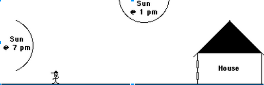
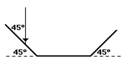
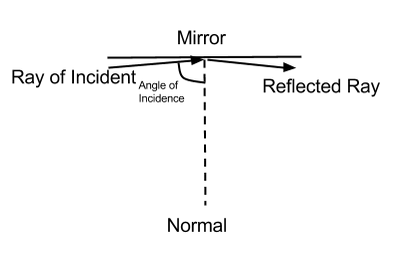
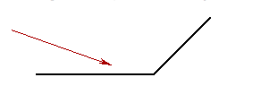
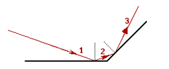

1. Explain why an observer can see the reflection of the sun off of the window of the house at 7 PM and not the reflection of the sun at 1 PM according to the diagram below.

2. In the diagram below, the arrow represents a ray of light and its direction. The three solid lines represent 3 mirrors. How many times will the light reflect off of the mirrors before it exits?

3. Desribe the Law of Reflection.
4. As the angle of incidence is increased for a ray incident on a mirror, the angle between the incident and reflected rays approaches what value?
a. zero b. 45 degrees c. 90 degrees d. 180 degrees

5. Diagram the path of the light ray.

Check below for the correct answers after finishing all the problems!
1. The sun at 7 PM shines a ray of light that reflects off of the window of the house,
which the observer sees. However, the sun at 1 PM does not have a ray of light that
reaches the window of the house, and instead shines onto the ground.
2. Two times (once off the left-most mirror and then once more off the right-most mirror).
3. The angle at which the ray hits the reflective surface (angle of incidence) will equal the angle at which the ray departs the reflective surface (angle of reflection).
4. D. As the angle of incidence approaches 90 degrees, the angle between the reflected ray and the normal also approaches 90 degrees.
This means that the total angle between the reflected and incident rays will approach 180 degrees.
5.

In order to complete this problem, one must draw normal lines perpendicular to the reflective surfaces at each point where the rays hit. The angle of incident should always equal the angle of reflection, which is the law of reflection. Draw the proceeding rays based on this rule.